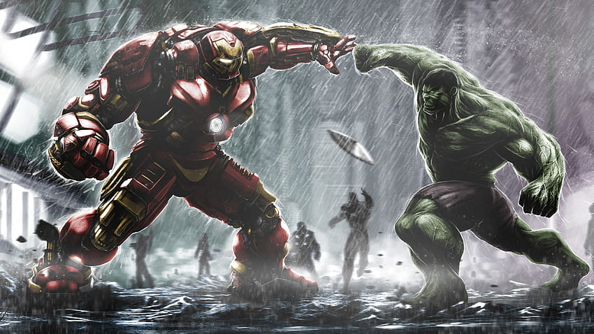
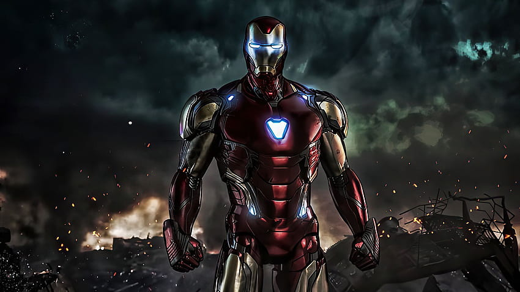
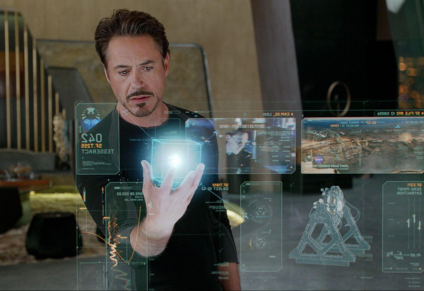
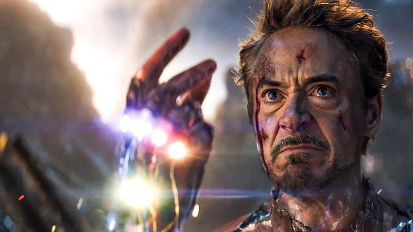
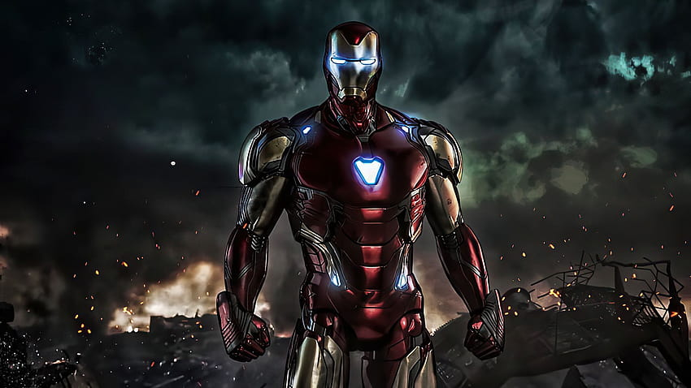
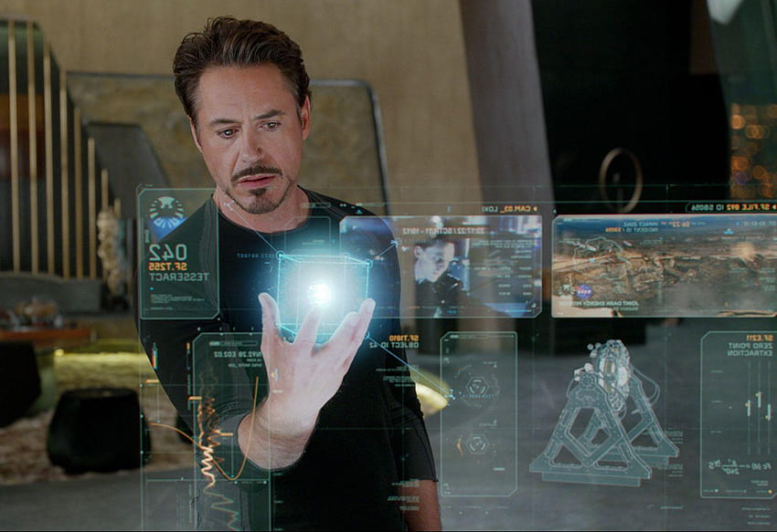
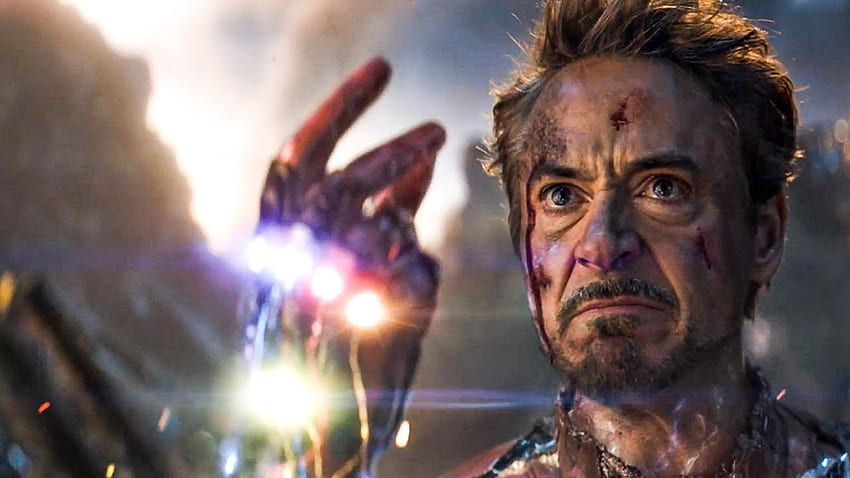

El Mundo Multimedia de IRON MAN
El superhéroe más emblemático del universo Marvel
Aquí tienes algunas cosas interesantes sobre él:
"Iron Man salvando el dia"







VIDEOS EXCLUSIVOS DE IRON MAN
Prueba de vuelo I
Prueba de vuelo II
Canciones favoritas de TONY STARK
Black Sabbath - "Iron Man"
Ha dejado una huella indeleble en la historia del rock. Desde su lanzamiento en 1970, ha cautivado a generaciones con su riff de guitarra pesado y su letra misteriosa. La canción narra la historia de un hombre que viaja en el tiempo y ve el apocalipsis, pero al regresar, se convierte en un ser de metal indestructible. Su sonido oscuro y poderoso, combinado con la voz única de Ozzy Osbourne, lo convierte en un himno para los amantes del rock y un símbolo del legado de Black Sabbath en la música. "Iron Man" sigue resonando con su energía única y su mensaje atemporal sobre la alienación y el destino humano.
AC/DC - "Back in Black"
La canción "Back in Black" se destaca por su energía implacable y su letra que habla sobre enfrentar desafíos y superar obstáculos, lo que resuena con la narrativa de Tony Stark en las películas de Marvel. Además, el título mismo, "Back in Black" (De vuelta en negro), evoca la armadura icónica de Iron Man, que en su mayoría es de color negro con detalles en rojo y dorado.